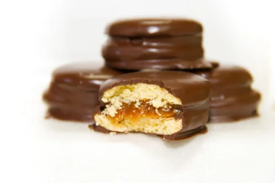
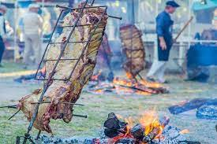
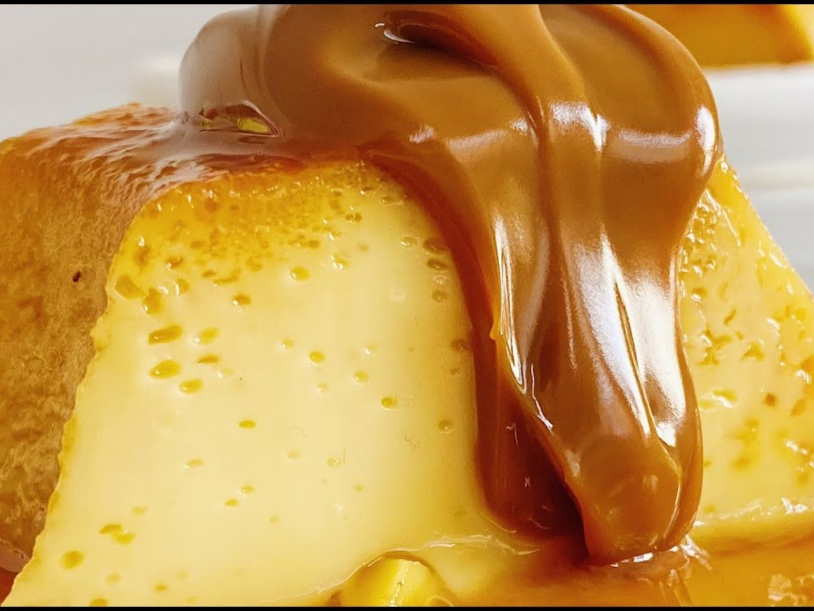

Recetas Mas Populares
Alfajores Patagónicos

Ingredientes
6 yemas de huevo
6 claras
1 cucharada de manteca
2 cucharadas de vinagre blanco
1 copita de anís
1 cucharada de coñac
200 gr de harina
3 cucharadas de polvo para hornear
250 gr de miel de caña
250 gr de azúcar
Nueces
Preparación
Primero debemos batir en un bol las yemas con la grasa derretida, añadir el vinagre, el anís, el coñac y la harina tamizada junto con el polvo para hornear
Trabajar con los puños hasta que la masa haga globos, dejar descansar durante 10 minutos y estirarla en hojas delgadas
Pincharlas con un tenedor y hornearlas
Mezclar en una cacerola la miel con el azúcar, llevar al fuego y hacer hervir hasta que tome punto de bolita dura
Batir en un recipiente las claras en punto de nieve y agregar de a poco el almíbar hirviendo, finalmente agregar esta mezcla la masa anterior
Armar discos de la masa y superponerlos para ser horneados a 250 C por unos 20 minutos
El gran asado a la estaca

Ingredientes
1 asador (un fierro en forma de cruz)
1 costillar entero más o menos 8/9 kg
Sal
20 kg de leña en rama
250 cc de chimichurri
Preparación
Prender un fuego pudiente
Atar el asado en la estaca, salarlo
Clavarlo en el suelo a unos 80 Cm. del fuego y con las costillas hacia el
Ir lentamente alimentado el fuego e ir incorporando cada tanto el chimichurri
Después de una hora y media dar vuelta el asado por media hora más
El flan de la abuela

Ingredientes
500 cc de leche
130 g de azúcar
4 huevos
1 cucharadita de esencia de vainilla
Azúcar para acaramelar los moldes
Preparación
Calentar la leche con la mitad del azúcar hasta que rompa el hervor.
Mezclar los huevos con el resto del azúcar.
Añadir lentamente la leche caliente a la preparación de los huevos sin dejar de revolver.
Incorporar la esencia de vainilla y colar.
Verter en una flanera acaramelada y cocinar en un horno precalentado a temperatura baja (150°C) a baño María, durante 45 minutos aproximadamente.
Retirar, dejar enfriar y desmoldar